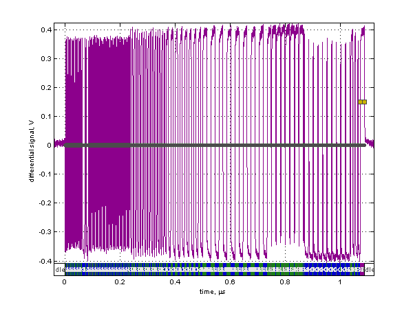
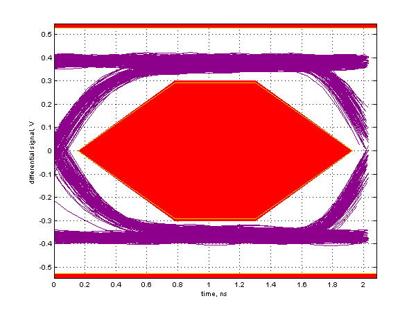

Near End High Speed Signal Quality Test
Results for high_speed_host0_port0
For details on test setup, methodology, and performance criteria, please consult the signal quality test description at the USB-IF Compliance Program web page.
Required Tests
- Overall result: pass!
- Signal eye:
eye passes
- EOP width: 7.96 bits
EOP width passes
- Measured signaling rate: 480.1146 MHz
signal rate passes
- Rising Edge Rate: 1076.36 V/us (594.60 ps equivalent risetime)
passes
- Falling Edge Rate: 1039.71 V/us (615.56 ps equivalent risetime)
passes
Additional Information
- Consecutive jitter range: -85.479 ps to 95.801 ps, RMS jitter 37.070 ps
Paired JK jitter range: -43.542 ps to 38.105 ps, RMS jitter 13.162 ps
Paired KJ jitter range: -34.996 ps to 43.933 ps, RMS jitter 15.200 ps
Signal Data and Eye


Tracking Information
- Analysis call: usbsigcheck('D:\A9125MP B\USB\High speed\high_speed_host0_port0.tsv', 'hsne', 1)
- Testing script version: 2.22.03